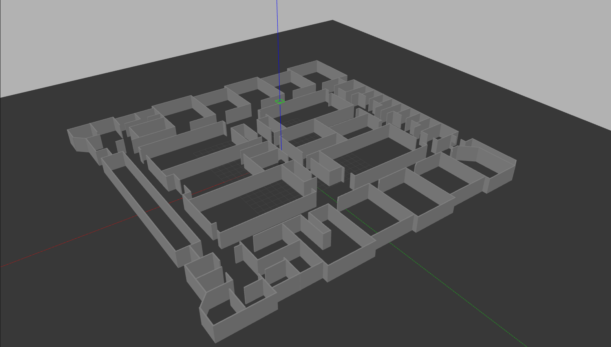
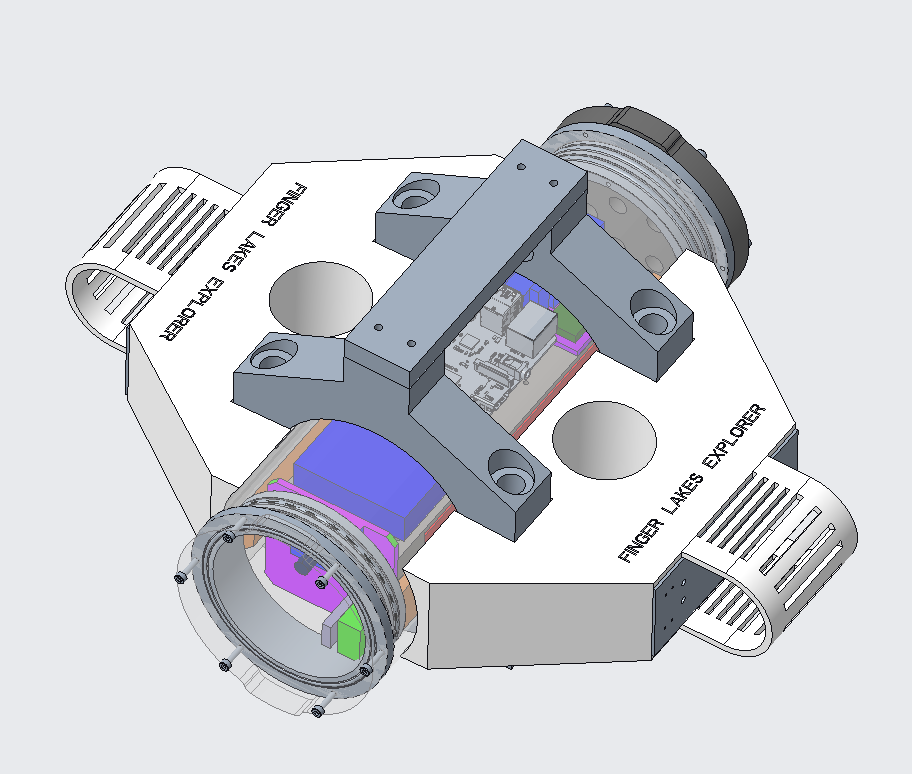
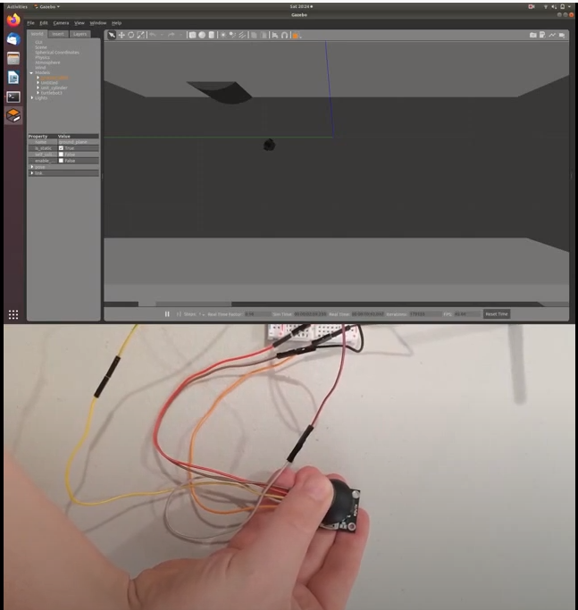
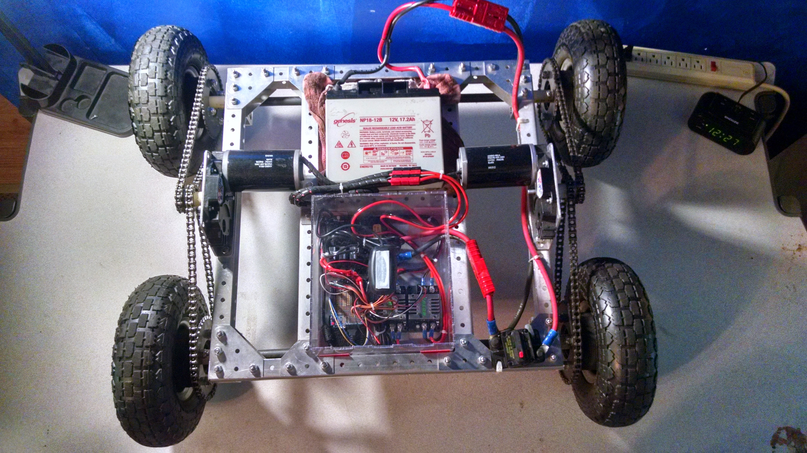
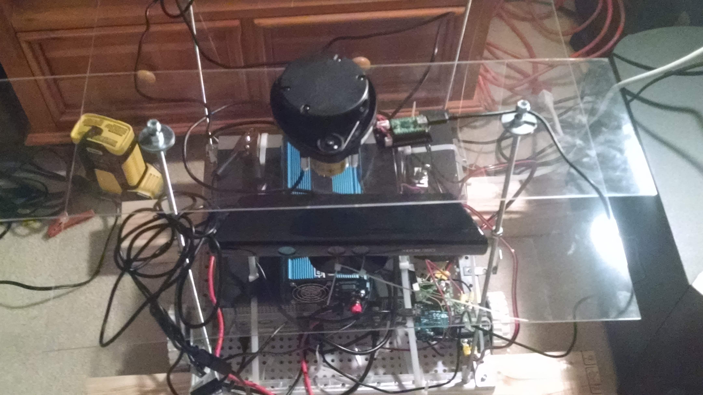
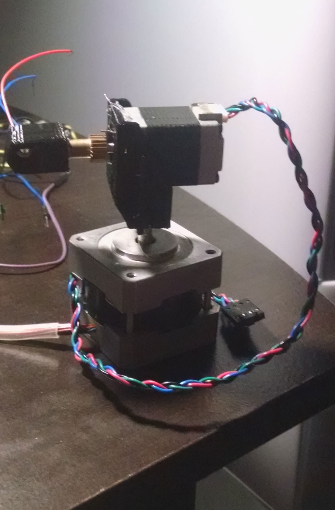

Robotics Projects
Please have a look here for my robotics projects I am most proud of and I feel are most significant. Newer projects that are representative of my current skill set are closer to the top of the page.

For information about the my research project examining the effectiveness of indoor autonomous agent navigation through the use of
Deep Q-Learning, please see the project page: DQL for Autonomous Agent Navigation

For information about my work as the software architect on an research project constructing an underwater ROV for exploring freshwater lakes
in the Finger Lakes region of upstate NY, please see the project page: Finger Lakes Explorer ROV

For information about the AES encrypted wireless control of a TurtleBot 3 Agent in a Gazebo simulation environment, please see the project page: AES Encrypted Wireless Robot Control

Kudos is my most current ROS project. It is my attempt at a robot running SLAM while actively exploring unmapped locations. Project Page: Kudos
 For information about SortME, the small face tracking platform, please visit the project page: SortME
For information about SortME, the small face tracking platform, please visit the project page: SortME

For information about RoveME, my large scale ROS robotics platform, please visit the project page: RoveME
 To see more about my robot vision education platform, please visit CeeVee's page: CeeVee
To see more about my robot vision education platform, please visit CeeVee's page: CeeVee
 To see more about my tool identification project for the Computer Science House at RIT, please visit the project page: ToolID